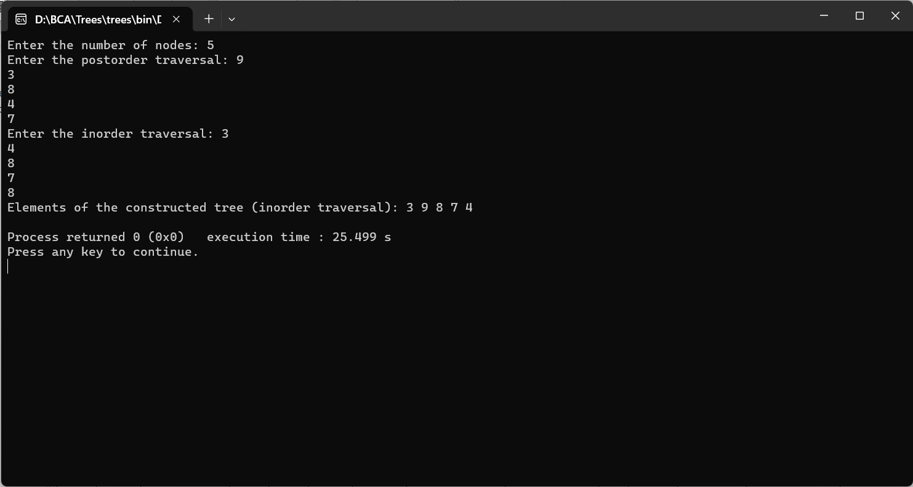

CONSTRUCT BINARY TREE FROM POSTORDER AND INORDER TRAVERSAL
#include
#include
struct Node {
char data;
struct Node* left;
struct Node* right;
};
int search(char arr[], int start, int end, char value) {
for (int i = start; i <= end; i++) {
if (arr[i] == value) {
return i;
}
}
return -1;
}
struct Node* buildTree(char postorder[], char inorder[], int inStart, int inEnd, int* postIndex) {
if (inStart > inEnd) {
return NULL;
}
struct Node* newNode = (struct Node*)malloc(sizeof(struct Node));
newNode->data = postorder[(*postIndex)--];
newNode->left = newNode->right = NULL;
if (inStart == inEnd) {
return newNode;
}
int inIndex = search(inorder, inStart, inEnd, newNode->data);
newNode->right = buildTree(postorder, inorder, inIndex + 1, inEnd, postIndex);
newNode->left = buildTree(postorder, inorder, inStart, inIndex - 1, postIndex);
return newNode;
}
void displayTreeInorder(struct Node* root) {
if (root == NULL) {
return;
}
displayTreeInorder(root->left);
printf("%c ", root->data);
displayTreeInorder(root->right);
}
int main() {
int size;
printf("Enter the number of nodes: ");
scanf("%d", &size);
char postorder[size], inorder[size];
printf("Enter the postorder traversal: ");
for (int i = 0; i < size; i++) {
scanf(" %c", &postorder[i]);
}
printf("Enter the inorder traversal: ");
for (int i = 0; i < size; i++) {
scanf(" %c", &inorder[i]);
}
int postIndex = size - 1;
struct Node* root = buildTree(postorder, inorder, 0, size - 1, &postIndex);
printf("Elements of the constructed tree (inorder traversal): ");
displayTreeInorder(root);
printf("\n");
return 0;
}
